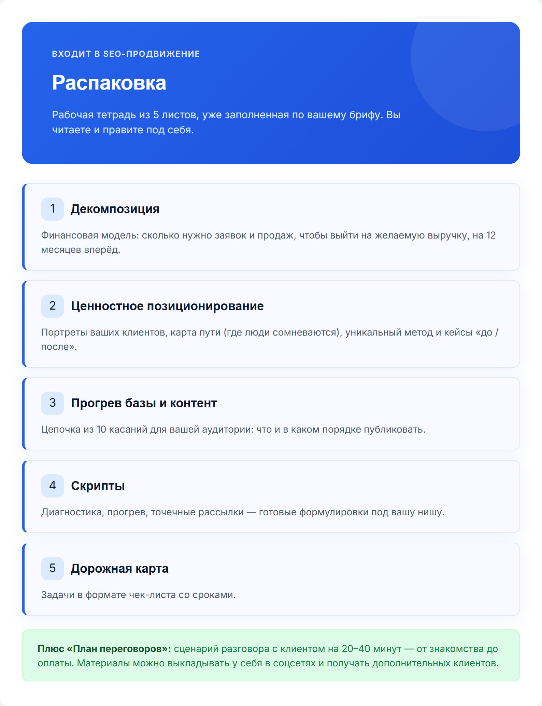
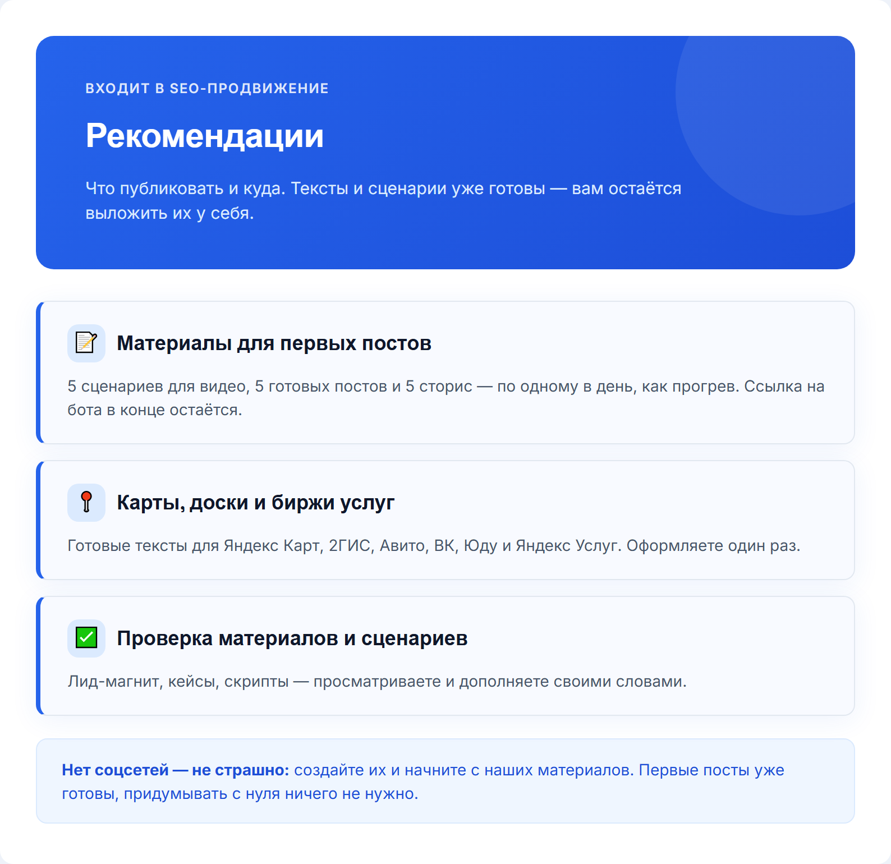
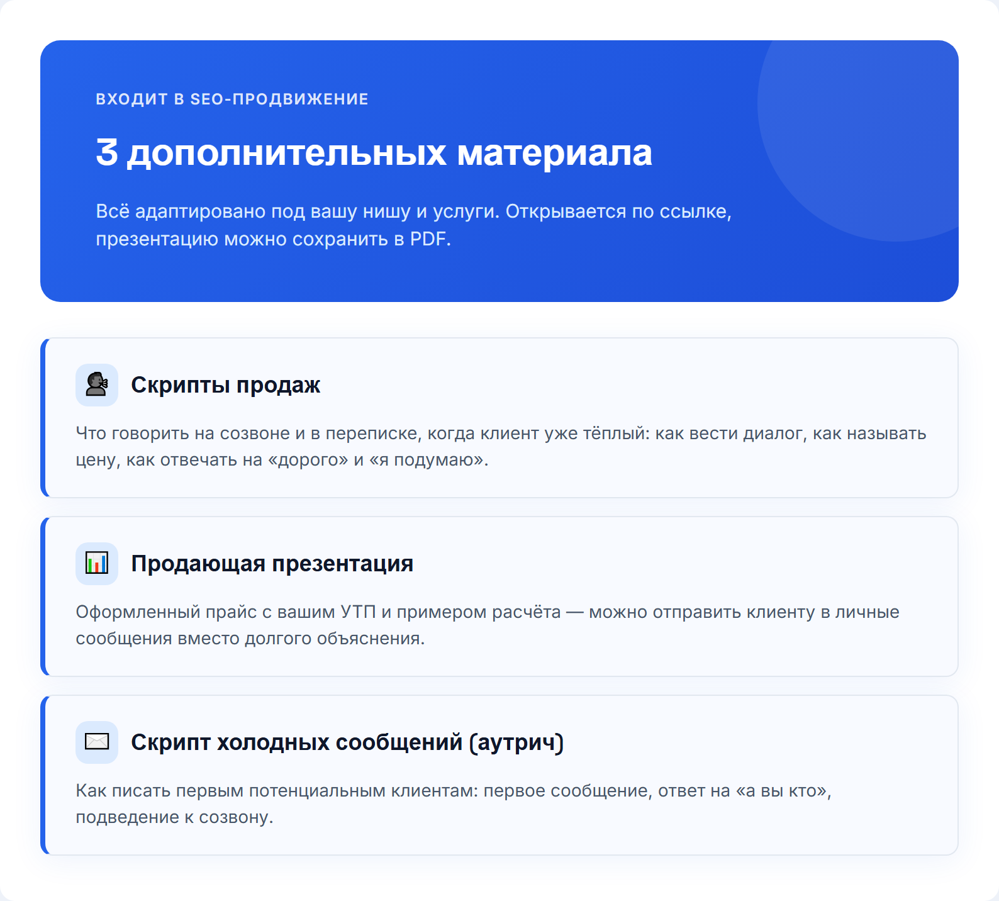
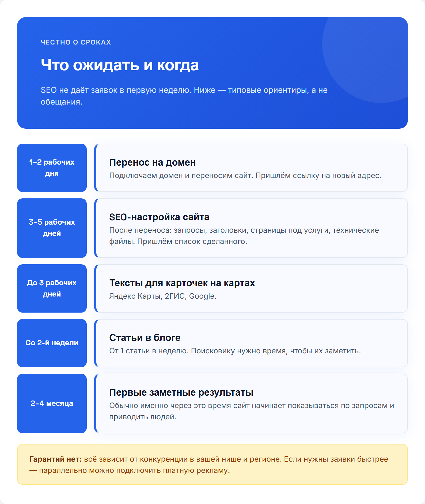

1
Без картинки
/первое_сообщение
Это рабочий чат — здесь будем вести ваш проект от сегодняшнего дня до поставленных задач. Рады, что вы с нами 🙏
2

/бриф
Ответьте на вопросы ниже — это нужно для точных целевых заявок. Нет ответа или не уверены — просто пропускайте. Можно голосовым. 🏢 О БИЗНЕСЕ 1. Сфера/ниша (напр.: психолог, брокер по новостройкам) 2. Конкретное предложение — что продаёте (напр.: «Продвижение Instagram») 3. Город(а) работы 4. Тип клиента: B2B / B2C / B2G 📊 ПОКАЗАТЕЛИ 5. Сколько клиентов сейчас в месяц (напр.: 5) 6. Желаемая выручка в месяц (напр.: 700 000 ₽) 7. Клиентский цикл (разовая покупка / подписка / долгий проект) 💰 УСЛУГИ И ЦЕНЫ 8. Список услуг с ценами, нумеруйте 8.1, 8.2... Напр.: 8.1 Курс — от 999 ₽, 8.2 Сессия 1.5ч — 7 500 ₽ 👤 АУДИТОРИЯ 9. Портрет идеального клиента (напр.: «Женщины 25-35, Москва») 10. Главная боль аудитории (напр.: «Нет заявок с сайта») 11. Ключевое возражение (напр.: «Дорого») 12. Измеримый результат (напр.: «+40% заявок») 13. УТП (напр.: «Первый месяц бесплатно») 🔗 Ссылки: ВК, ТГ, Instagram, бот, сайт, YouTube/Рутуб
3

/термины
Пара терминов, которые будут встречаться в переписке — коротко объясняем:
4

/путь_клиента
Вот как человек проходит путь от поиска в Яндексе до обращения к вам. Важно: это путь через поисковое продвижение. Заявки приходят не мгновенно, а нарастают по мере того, как сайт набирает позиции.
5

/бот_как_работает (вместо /прогрев_бота)
Так будет работать бот: человек приходит по ссылке с сайта, проходит мини-игру, а в финале получает гайд. Задания и тексты согласуем с вами.
6
Без картинки
/сайт_отправка
Здравствуйте! @{НИК_КЛИЕНТА}
Посадочная страница/сайт: {ССЫЛКА_НА_САЙТ}
Заявки с сайта приходят в Telegram-бот — активируйте его по ссылке: {DEEP_LINK_БОТА}
❗ Правки вносятся ТОЛЬКО один раз — соберите все в одно текстовое сообщение (скриншоты и голосовые не принимаются техспециалистом), если потребуется что-то поправить.
❗ Если нужно добавить фото — присылайте ТОЛЬКО ссылкой на Яндекс.Диск с открытым доступом («доступно всем, у кого есть ссылка»), мы извлечём фото оттуда. По-другому техспециалист и программа файлы не принимают.
❗ Когда напишете все правки, ОБЯЗАТЕЛЬНО добавьте фразу "это всё" — так мы поймём, что можно брать в работу.
Также нужно уточнить пару моментов:
{УТОЧНЕНИЕ_1}
{УТОЧНЕНИЕ_2}7

/упаковка_готова
Готов этап «Упаковка» — все материалы созданы. Пожалуйста, посмотрите отчёт и напишите: «Принимаю» — если всё устраивает, переходим к следующему этапу
8

/seo_предложение (новое)
Здравствуйте! Предлагаем следующий шаг для вашего сайта: перенести его на собственный домен и запустить SEO-продвижение, чтобы заявки шли из поиска. Что предлагаем Переносим сайт на ваш домен (например, название-компании.ru) и после этого занимаемся его продвижением в Яндексе и Google. Что именно входит — на картинке. Почему это важно Адрес сайта — его фундамент: вся история, статьи и позиции копятся именно на нём. Свой домен принадлежит вам, внушает клиентам больше доверия и позволяет подключить фирменную почту. Подробно, с примерами и схемой переноса: https://murzzsite.github.io/domain-guide/ Что мы будем делать Подберём запросы ваших клиентов, настроим сайт под поиск, будем писать статьи каждую неделю, оформим карточки на Яндекс Картах, 2ГИС и Google и каждый месяц присылать отчёт. Весь объём работ, со скриншотами и сроками: https://murzzsite.github.io/seo-work-guide/ Сроки — Перенос на домен: 1–2 рабочих дня. — SEO-настройка сайта: 3–5 рабочих дней после переноса. — Тексты для карточек на картах: в течение 3 рабочих дней. — Первые статьи: от 1 статьи в неделю, начиная со второй недели. — Первые заметные результаты в поиске обычно появляются через 2–4 месяца. Гарантировать позиции и число заявок нельзя: они зависят от конкуренции в вашей нише и регионе. Как отчитаемся После переноса пришлём ссылку на сайт на новом домене. После SEO-настройки пришлём список сделанного. Дальше каждый месяц будем отправлять короткий отчёт: сколько страниц в поиске, по каким запросам показывается сайт, сколько человек пришло и что планируем дальше. Хотите заявки уже в первые дни? — Яндекс Директ (реклама для тех, кто уже ищет вашу услугу): https://murzzsite.github.io/direct-guide/ — VK Реклама (показ по интересам и возрасту во ВКонтакте): https://murzzsite.github.io/vk-ads-guide/ Стоимость 7 500 ₽ — перенос сайта на домен и SEO-продвижение, включая блог со статьями, Распаковку, Рекомендации и три дополнительных материала. Домен оплачивается отдельно напрямую у регистратора, примерно 200–1 000 ₽ в год (чаще всего хватает 200 ₽), подскажем, где выгоднее. Порядок такой: оплата, затем перенос. Если вам подходит, напишите слово «домен» в ответ на это сообщение, и мы начнём.
9

Скачать файл/распаковка_состав (новое)
Что входит в Распаковку — на картинке. Черновик уже заполнен по вашему брифу: вам нужно прочитать и поправить под себя. Материалы можно выкладывать у себя в соцсетях и получать дополнительных клиентов.
10

Скачать файл/рекомендации_состав (новое)
Что входит в Рекомендации — на картинке. Материалы для первых постов уже готовы: если соцсетей пока нет, создайте их и начните с нашего контента. Тексты и сценарии готовим мы, публикуете вы у себя.
11

Скачать файл/доп_материалы (новое)
Три дополнительных материала под ваш оффер — скрипты продаж, продающая презентация и скрипт холодных сообщений. Они входят в стоимость продвижения, ссылки пришлём после оплаты.
12

Скачать файл/сроки
Сроки по этапам — на картинке. Это типовые ориентиры, не обещание: результат в поиске зависит от конкуренции в вашей нише.
13
Без картинки
/оплата_принята (новое)
Отлично, начинаем! 🙌
Оплатить перенос сайта и SEO-продвижение (7 500 ₽) можно по ссылке: {ССЫЛКА_НА_ОПЛАТУ}
Вышлите чек в чат, как проведёте оплату, мы добавим в этот чат технического специалиста. Он поможет подобрать и зарегистрировать домен и сам перенесёт сайт. От вас потребуется только выбрать название. Домен оплачивается отдельно у регистратора, программист подскажет, где выгоднее.14

/платформа_регистрация
Что нужно сделать дальше:
1. Зарегистрируйтесь в личном кабинете по ссылке:
{ССЫЛКА_НА_ПЛАТФОРМУ}
Инвайт-код: {ИНВАЙТ_КОД}
2. После регистрации подтвердите аккаунт через e-mail и пришлите нам логин и пароль — чтобы мы подключили ваш проект.
3. Прикрепите в личном кабинете подписанный акт — без него кабинет остаётся заблокирован.
4. В кабинете вы увидите раздел «Распаковка», рекомендации и отчёты по задачам.15
Без картинки
/видео_кабинет
Прикрепляем короткое видео, как работать в личном кабинете:
{ССЫЛКА_НА_ПЛАТФОРМУ}
Что в видео:
— Раздел «Распаковка» — фундамент: кто ваш клиент, чем вы отличаетесь, как продаёте.
Черновики уже готовы, нужно только поправить под себя.
— Блок рекомендаций — что публиковать и куда, и как прикладывать отчёты.
Посмотрите один раз полностью — дальше будет легко ориентироваться самим.
После просмотра:
1. Начните проходить задачи в блоке рекомендаций по порядку
2. Прикладывайте отчёты к выполненным задачам — так быстрее проверим
Вопросы — пишите сюда 🙂16


/ускорители (вместо /подрядчики)
Если захотите получать заявки быстрее, чем набирает вес SEO, можно параллельно подключить платные каналы — это отдельный бюджет, подключаем только по вашему желанию. Список и цены — на картинке. Пишите — согласуем и запустим.